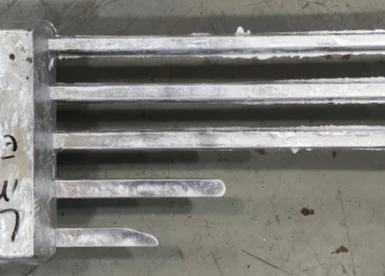

Work / Simulation, CFD & Optimization, Materials, Casting & Manufacturing
Casting simulation and porosity prediction
Casting simulation is cheap but low fidelity; CT scanning of cast parts is high fidelity but expensive. This research ties the two together. Ongoing.
- Organization
- Advanced Casting Research Center, The Ohio State University
- Role
- Undergraduate Research Assistant
- Dates
- March 2026 – present
- Status
- Ongoing
- Category
- Simulation, CFD & Optimization, Materials, Casting & Manufacturing
Key results
30+
Metal-casting simulations generated across multiple material conditions
Reported
13+
Material systems where material-property and database issues were debugged
Reported
11+
Materials simulated to evaluate solidification, fluidity, and porosity formation
Reported
- Reported
- Workplace or lab figure as stated on my resume or portfolio.
Problem and background
MAGMASOFT predictions must be calibrated against physical die-casting results before the simulated porosity and fluidity behavior can be trusted. Without calibration, a simulation can look convincing and still disagree with the part that comes out of the die.
Objective
Develop a simulation and data workflow that:
- Correlates MAGMASOFT results with experimental casting data to validate simulation settings.
- Evaluates porosity and fluidity across multiple casting conditions.
- Reduces reliance on physical casting trials.
Where my work sits
The research group's workflow starts from process parameters: metal temperature, mold temperature, shot profile, composition, and vacuum level. Those drive both die-casting trials and casting simulations. Simulation results are low fidelity and cheap; CT scanning of cast parts is high fidelity and expensive. Bayesian optimization with a surrogate model links the two, and AI/ML models (random forest, neural network, logistic regression) predict porosity. My work is the casting-simulation block.

Approach and responsibilities
- Calibrate MAGMASOFT simulations against experimental results and troubleshoot discrepancies with real-world casting behavior.
- Build and modify CAD models of molds and internal mold features.
- Configure and execute simulations for gravity casting and high-pressure die casting (HPDC).
- Collect and analyze experimental die-casting data to validate simulations and calibrate machine-learning models for casting defect prediction.
- Prepare metal samples for electron microscopy and tensile testing to characterize material and casting performance.



Progress and results
- Generated 30+ metal-casting simulations across multiple material conditions.
- Debugged material-property and database issues for 13+ material systems.
- Calibration and validation against experimental results are ongoing, so there is no final result to report yet.
Tools and methods
- MAGMASOFT
- Gravity casting and HPDC process setups
- Mold CAD
- Experimental die-casting data analysis
- Sample preparation for electron microscopy and tensile testing
Counts are as stated in my resume and portfolio catalog at the time of writing; the work is ongoing.